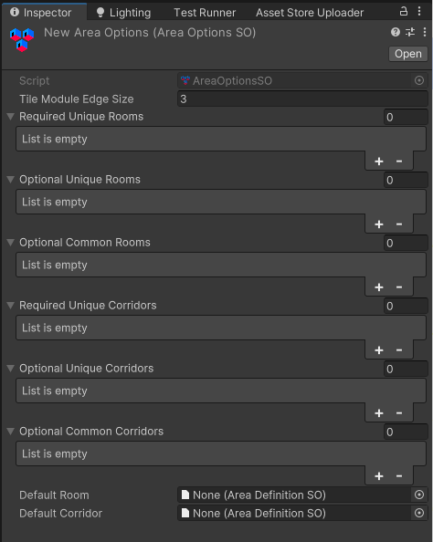

Area Options
Area Options assets define how each room and corridor will be named and "skinned" (which visual style they use).
Creating an Area Options asset
To create a new Area Options asset, right-click in your Project Assets and select "Create/MoraMapGen/Area Options".
Defining the Area Options
Specify which Rooms and Corridors can be used in the map generation by assigning Area Definition assets to the various categories. At a minimum, you must specify the Default Room and Default Corridor. They can share the same Area Definition asset if you want them to look identical, and in fact both can use the same Area Definition. You should also ensure the Tile Module Edge Size is set to match your module prefabs. Any of the other lists can be left empty.

Tile Module Edge Size
This is where you specify the length in Unity units of each of your module prefab meshes. Each module should be the same dimensions and they should be square in the X and Z axes, but can be whatever Y height you want. Example: If your wall and floor prefabs are 4×4 Unity units when viewed from above, set this to 4.
Required Unique Rooms
Exactly 1 of each of these rooms will be generated/assigned. When using the Chunks Room Creation Mode, the system will try to make at least enough chunks to support these rooms. If your map size is too small and/or min chunk size is too large, there may not be enough space for the required number of chunks.
Optional Unique Rooms
Up to 1 of each of these rooms may be generated/assigned. These rooms will be among the options to be assigned to each area, but are not guaranteed to be selected at all.
Optional Common Rooms
Any number of each of these may be generated/assigned (including 0.)
Required Unique Corridors
Exactly 1 of each of these corridors will be generated/assigned. Make sure the map has enough rooms to support enough corridors for all required unique corridors.
Optional Unique Corridors
Up to 1 of each of these corridors may be generated/assigned.
Optional Common Corridors
Any number of each of these may be generated/assigned (including 0.)
Default Room
This is the fallback default room definition used when there aren't any optional rooms available or not enough required rooms to fill all room spaces.
Note
The Default Room's Tile Module Definitions also determine the exterior ceiling for the outer boundary of the map.
Default Corridor
This is the fallback default corridor definition used when there aren't any optional corridors available or not enough required corridors to fill all corridor spaces.